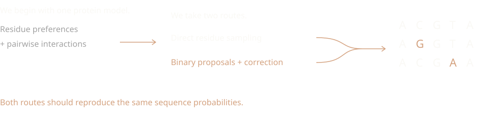

The research question
We want better samples from the same model.
We want to explore many plausible protein sequences, rather than find just one low-energy sequence.

Our question is whether the binary route can give us reliable samples in less time.
To answer it fairly, we keep the protein model fixed and check accuracy before comparing speed.